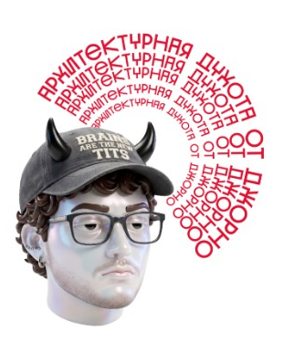

ИЛИ КАК ВЛЮБИТЬСЯ В ПУСТОТУ
ЯПОНИЯ
5 АРХИТЕКТОРОВ
200 ЛЕТ
1800 → 2026

ОТ КОПИИ ЕВРОПЕЙСКОГО КИРПИЧА
ДО КРУПНЕЙШЕГО ДЕРЕВЯННОГО
СООРУЖЕНИЯ В МИРЕ.
ЛИСТАЙ →
— А Я ДУМАЛ, ЭТО ПРОСТО БЕТОН
02 / 08
ДО ТОГО КАК ВСЁ НАЧАЛОСЬ
1800 ГОД. ЯПОНИЯ ЗАКРЫТА ОТ МИРА УЖЕ 160 ЛЕТ. ДЕРЕВО, БУМАГА, РАЗДВИЖНЫЕ СТЕНЫ И 間 — «МА»: ПУСТОТА МЕЖДУ ВЕЩАМИ, КОТОРАЯ ВАЖНЕЕ САМИХ ВЕЩЕЙ.
1853. ЧЁРНЫЕ КОРАБЛИ КОММОДОРА ПЕРРИ.
1868. РЕВОЛЮЦИЯ МЭЙДЗИ.
1877. В ТОКИО ПРИЕЗЖАЕТ БРИТАНЕЦ ДЖОСАЙЯ КОНДОР — УЧИТЬ ПЕРВЫХ ЯПОНСКИХ АРХИТЕКТОРОВ.
ДАЛЬШЕ — 5 ИМЁН И 150 ЛЕТ, ЗА КОТОРЫЕ УЧЕНИК ПЕРЕРОС УЧИТЕЛЯ.
— ЛИСТАЙ, БУДЕТ ДУШНО
03 / 08
1914 ГОД. ТАЦУНО КИНГО — ВЫПУСКНИК ПЕРВОГО В ЯПОНИИ КУРСА АРХИТЕКТУРЫ И УЧЕНИК КОНДОРА — ОТКРЫВАЕТ ТОКИЙСКИЙ ВОКЗАЛ: 335 МЕТРОВ КРАСНОГО КИРПИЧА С БЕЛЫМИ ПОЯСАМИ КАМНЯ И ДВУМЯ КУПОЛАМИ
01
ТАЦУНО КИНГО
1854–1919

ТОКИЙСКИЙ
ВОКЗАЛ
ЯПОНИЯ ДОКАЗЫВАЕТ ЗАПАДУ, ЧТО ВЫУЧИЛА ЕГО ЯЗЫК. В 1945-М КУПОЛА СГОРЕЛИ ПРИ БОМБАРДИРОВКЕ, В 2012-М ИХ ВЕРНУЛИ ПО ИСХОДНЫМ ЧЕРТЕЖАМ ТАЦУНО.
— ВЫУЧИЛ ЯЗЫК, НО С АКЦЕНТОМ
04 / 08
1964 ГОД. ПЕРВАЯ ОЛИМПИАДА В АЗИИ. КЭНДЗО ТАНГЭ ПОДВЕШИВАЕТ КРЫШУ АРЕНЫ ЁЁГИ НА СТАЛЬНЫХ ТРОСАХ, КАК ВИСЯЧИЙ МОСТ. ЛИНИЯ КРОВЛИ ИЗГИБАЕТСЯ, КАК КОНЁК СТАРОГО ХРАМА
02
КЭНДЗО ТАНГЭ
1913–2005

АРЕНА ЁЁГИ
МОДЕРНИЗМ, НО УЖЕ С ЯПОНСКИМ ГОЛОСОМ. ДО ЭТОГО ТАНГЭ ПОСТРОИЛ МУЗЕЙ МИРА В ХИРОСИМЕ. В 1987-М — ПЕРВЫЙ ЯПОНСКИЙ ПРИТЦКЕР.
— КРЫША, КОТОРАЯ ВИСИТ
05 / 08
1972 ГОД. ГИНДЗА. КИСЁ КУРОКАВА ПРИКРУЧИВАЕТ 140 КАПСУЛ 2,5 × 4 МЕТРА К ДВУМ БЕТОННЫМ СТВОЛАМ. МЕТАБОЛИЗМ: ГОРОД — ОРГАНИЗМ, КВАРТИРА — КЛЕТКА, КОТОРУЮ МОЖНО ЗАМЕНИТЬ
03
КИСЁ КУРОКАВА
1934–2007

НАКАГИН
КАПСУЛ ТАУЭР
КАПСУЛЫ ПЛАНИРОВАЛИ МЕНЯТЬ РАЗ В 25 ЛЕТ. НЕ ПОМЕНЯЛИ НИ ОДНОЙ. В 2022-М БАШНЮ РАЗОБРАЛИ, ЧАСТЬ КАПСУЛ СПАСЛИ И ОТРЕСТАВРИРОВАЛИ ДЛЯ МУЗЕЕВ.
— БУДУЩЕЕ БЕЗ ОБНОВЛЕНИЙ
06 / 08
1989 ГОД. ПРИГОРОД ОСАКИ. БЫВШИЙ БОКСЁР-САМОУЧКА БЕЗ АРХИТЕКТУРНОГО ДИПЛОМА ПРОРЕЗАЕТ В БЕТОННОЙ СТЕНЕ КРЕСТ. ДРУГОГО ДЕКОРА В ЦЕРКВИ НЕТ — ТОЛЬКО СВЕТ
04
ТАДАО АНДО
Р. 1941

ЦЕРКОВЬ СВЕТА
АНДО МЕЧТАЛ УБРАТЬ ИЗ КРЕСТА СТЕКЛО, ЧТОБЫ ВНУТРЬ ЗАХОДИЛ ВЕТЕР. БЮДЖЕТ БЫЛ МИЗЕРНЫЙ — ОН СДЕЛАЛ ИЗ ЭТОГО МАНИФЕСТ. 1995 — ПРИТЦКЕР.
— МИНИМАЛИЗМ МНЕ НЕ ПО КАРМАНУ
07 / 08
2025 ГОД. EXPO В ОСАКЕ. СУ ФУДЗИМОТО СОБИРАЕТ «БОЛЬШОЕ КОЛЬЦО» ОКОЛО 2 КМ ПО ОКРУЖНОСТИ: КЕДР И КИПАРИС НА ХРАМОВЫХ ВРУБКАХ «НУКИ», БЕЗ ЕДИНОГО ГВОЗДЯ В УЗЛАХ
05
СУ ФУДЗИМОТО
Р. 1971

БОЛЬШОЕ
КОЛЬЦО
КНИГА ГИННЕССА: КРУПНЕЙШЕЕ ДЕРЕВЯННОЕ СООРУЖЕНИЕ В МИРЕ. КРУГ ЗАМКНУЛСЯ — ОТ ЧУЖОГО КИРПИЧА К СОБСТВЕННОМУ ДЕРЕВУ. ЧАСТЬ КОЛЬЦА РЕШИЛИ СОХРАНИТЬ.
— 200 ЛЕТ, ЧТОБЫ ВЕРНУТЬСЯ К ДЕРЕВУ
08 / 08
ЧТО ЗАБРАТЬ С СОБОЙ
01. СНАЧАЛА ВЫУЧИ ЧУЖОЙ ЯЗЫК — ПОТОМ ЗАГОВОРИ СВОИМ. ТАЦУНО → ТАНГЭ
02. БУДУЩЕЕ СТАРЕЕТ БЫСТРЕЕ ВСЕГО. ТРАДИЦИЯ — НЕТ. КУРОКАВА → ФУДЗИМОТО
03. ПУСТОТА — ТОЖЕ МАТЕРИАЛ. И САМЫЙ ДЕШЁВЫЙ. АНДО

— А В МОСКВЕ
ТАК МОЖНО?
— ПОГОВОРИМ
В КОММЕНТАРИЯХ
СОХРАНИ, ЧТОБЫ ДУШНИТЬ
НА СВИДАНИИ